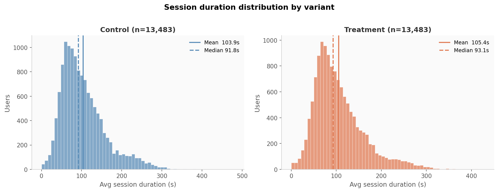
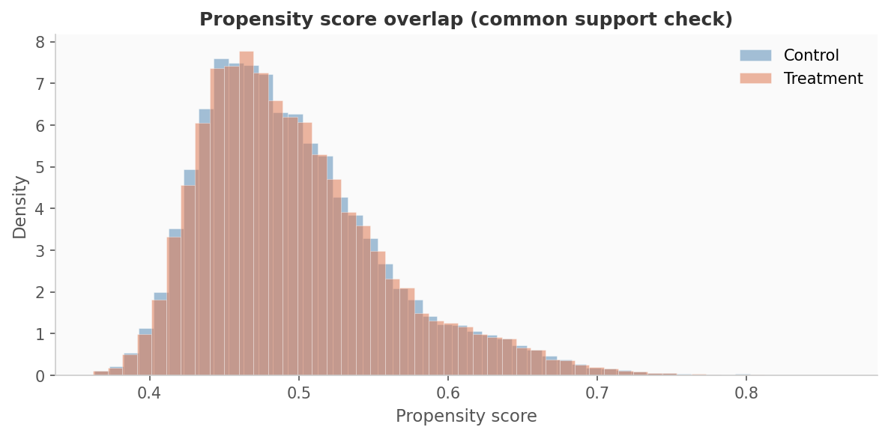
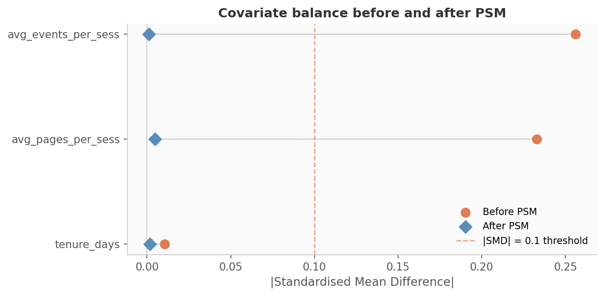
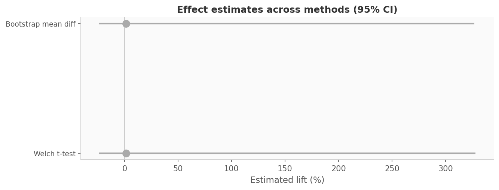
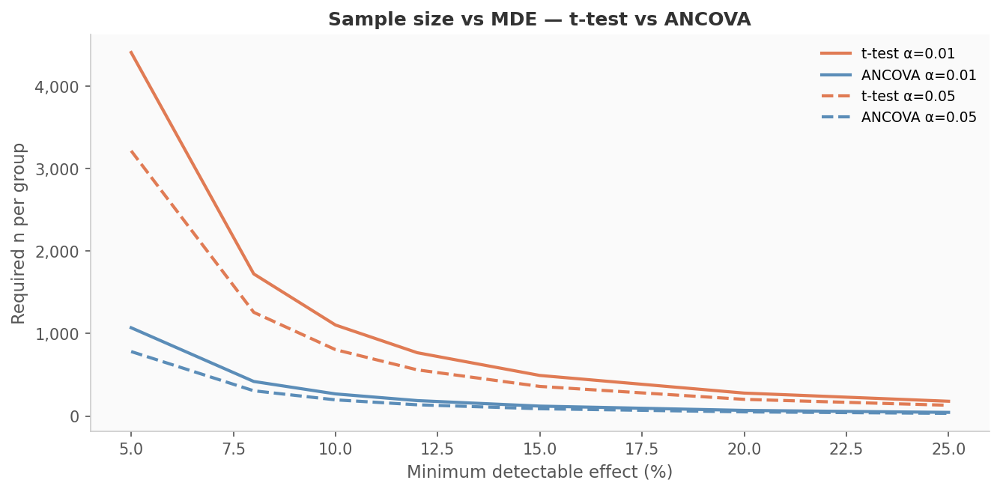

The UI change produced a +1.8% lift in average session duration (ANCOVA, p=3.47e-07, α=0.01, n=26,966). All secondary tests (Mann-Whitney U, bootstrap) are directionally consistent. Recommend shipping to 100% of users.
Primary estimator: ANCOVA on log-transformed session duration with covariate adjustment (tenure, pages/session, events/session). Heteroskedasticity-robust standard errors (HC3). Secondary validation: PSM nearest-neighbour matching (caliper=0.05), Welch t-test, Mann-Whitney U, and percentile bootstrap on the matched sample.
| Test | Lift (%) | p-value | 95% CI low | 95% CI high | Significant |
|---|---|---|---|---|---|
| Welch t-test | 1.47% | 2.5161e-02 | -0.229 | 3.273 | No |
| Mann-Whitney U | — | 1.8804e-03 | — | — | Yes |
| Bootstrap mean diff | 1.47% | — | -0.232 | 3.263 | No |
| Method | n / group | Total n | Notes |
|---|---|---|---|
| two-sample t-test | 1,104 | 2,208 | |
| ANCOVA (covariate-adjusted) | 268 | 536 | R²=0.757 → variance reduction=75.7%, sample reduction vs t-test=75.7% |





| Covariate | Control mean | Treatment mean | SMD before | SMD after |
|---|---|---|---|---|
| tenure_days | 24.092 | 24.025 | -0.011 | 0.002 |
| avg_pages_per_sess | 2.772 | 2.924 | 0.233 | -0.005 |
| avg_events_per_sess | 5.061 | 5.607 | 0.256 | 0.001 |